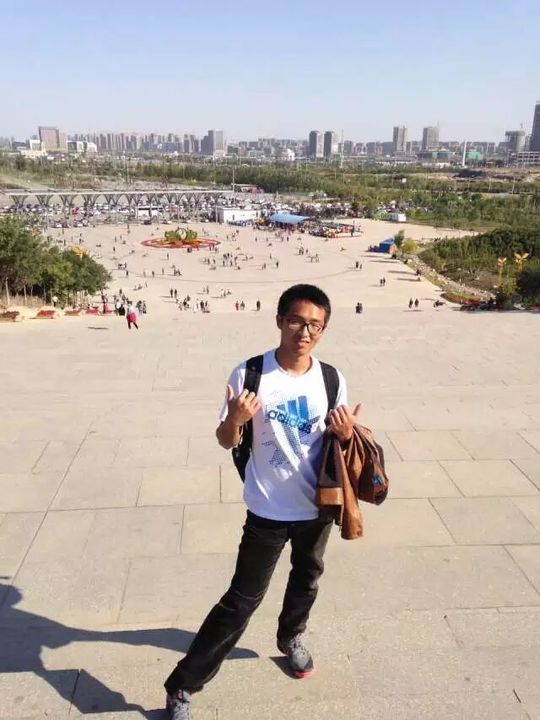
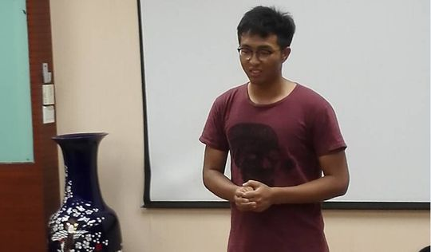
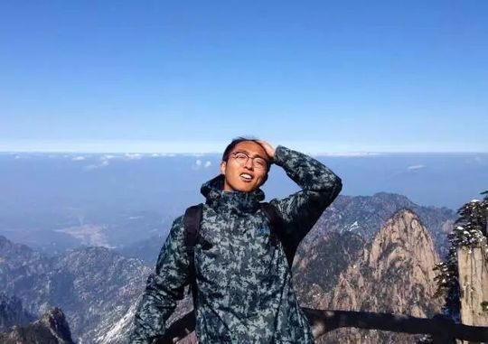
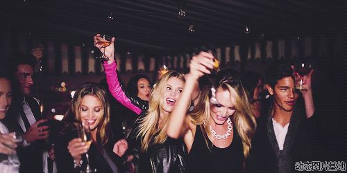
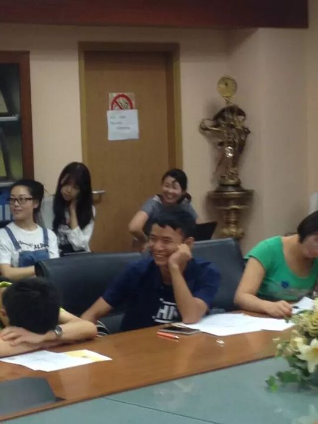

Eric
Eric，中文名胡晨辉，电子与通信工程专业。一次外企英文面试被"虐"后，他决心提升自己，于是走进了一直关注着的北航头马。2016年5月，他正式加入俱乐部，自我介绍里写下"E代表energy，r代表reading，i代表interesting，c代表concentration"——阳光、活力、不惧挑战，长辈眼中的乖宝宝，同学眼中的逗逼，静可研读哲学，动可驰骋球场，会唱周杰伦的每一首歌，知道关于科比的每一个篮球故事。这位被大家称作"篮球男神"的壮丁，从此成了俱乐部里高大威猛又自带蜜汁自信的存在。
他的破冰来得迅猛。入会不久便在第137次会议献上CC1《Basketball and my life》，一句"basketball is my life and basketball is my wife"逗乐全场，并一举拿下当晚Best Speaker；随后又陆续完成《Wish List before Graduation》《Fear to do my CC2》等备稿演讲——后者把自己追女生被拒、收到好人卡的经历讲成"跟随本心，就是怂"的幽默自嘲，CC2讲台上依旧从容。即兴环节里他同样活跃，从"在错的时间遇到对的人"的爱情计划，到果断退场成全队友的绅士之举，台风从容、段子不断，后来更在第152次会议上摘得Best Table Topic Speaker。
台前出彩之外，Eric也在台后默默出力。2016年秋季演讲比赛，他与Mike一同担任摄影、记录比赛精彩瞬间，是俱乐部"史上最豪华阵容"背后辛勤付出的一员。三周年晚会上，他登台献唱"抛砖引玉"，被赞是个好"演员"；游戏环节里又主动退出、把胜利让给伙伴，绅士本色尽显。他是那种台上能讲、台下能扛、relationship里讲究"喜欢是放纵，但爱是克制"的头马人。
里程碑
- 2016-05 加入北航头马 ↗外企英文面试受挫后决心提升自己，正式入会，自我介绍称E-r-i-c代表energy/reading/interesting/concentration。
- 2016-05-13 首秀破冰CC1并获Best Speaker ↗第137次会议献上《Basketball and my life》，凭篮球故事拿下当晚最佳演讲者。
- 2016-05-30 在第139次会议被正式欢迎入会 ↗童真主题中文会议上，俱乐部公开欢迎Francis与Eric加入。
- 2016-09 获评Best Table Topic Speaker ↗第152次会议即兴环节表现出色，摘得最佳即兴演讲奖。
闯关之路 · Competent Communication
做过的演讲 · 3 场
担任过的会议角色
为俱乐部做的事
- 入会后迅速完成CC1、CC2等多场备稿演讲，以篮球与生活的幽默故事活跃会场
- 2016秋季演讲比赛中与Mike共同负责摄影记录，为比赛留下精彩影像，是台后后勤的一员
- 三周年晚会登台献唱，并在游戏环节主动退出成全队友，展现绅士风度
- 积极参与即兴演讲环节，带动会议气氛
照片墙 · 时间线
 ✓
✓
✓ ✓
✓ ✓
✓ ✓
✓ ✓
✓
✓ ✓
✓ ✓
✓









完整足迹 · 12 次出现（点开，每条可跳转原文）
- 2016-05-12第137次 · 预告CC1演讲《Basketball and my life》
- 2016-05-17第137次 · 做CC1演讲《basketball and my life》，获最佳演讲者
- 2016-05-19第138次 · 做CC1演讲《Wish List before Graduation》
- 2016-05-24第138次 · 即兴演讲谈如何计划开始一段感情
- 2016-05-28接受入会采访做自我介绍
- 2016-05-30第139次 · 入会
- 2016-06-02第140次 · 预告CC2演讲《Fear to do my CC-2》
- 2016-06-09第141次 · 预告CC2演讲《Fear to do my CC-2》
- 2016-06-14第141次 · 做CC2演讲《Fear to my》谈追女生被拒，获最佳演讲者
- 2016-06-27游戏决胜时绅士退出并献唱表演
- 2016-09-05参与比赛后勤拍照工作
- 2016-09-14第152次 · 参加即兴演讲获得Best Table Topic Speech